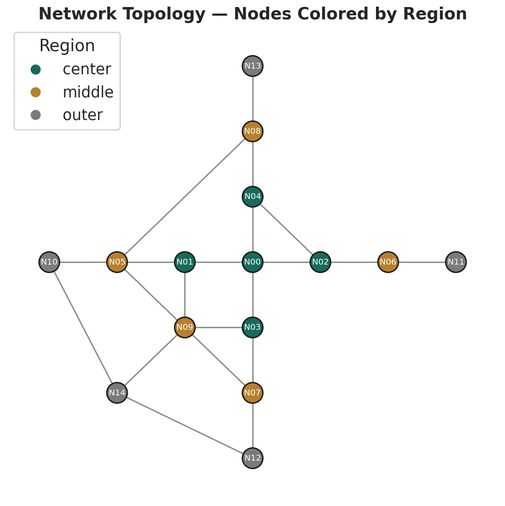
路网拓扑
15 个节点按中心—中间—外围三层区域分布，边表示路段连接。
Model Results
这一页展示时空分析的典型结果：路网拓扑、时空相关性、路段运行模式聚类和多模型预测比较。
01
时空分析的第一步是理解路网结构和邻接关系，这是后续空间建模的基础。

15 个节点按中心—中间—外围三层区域分布，边表示路段连接。
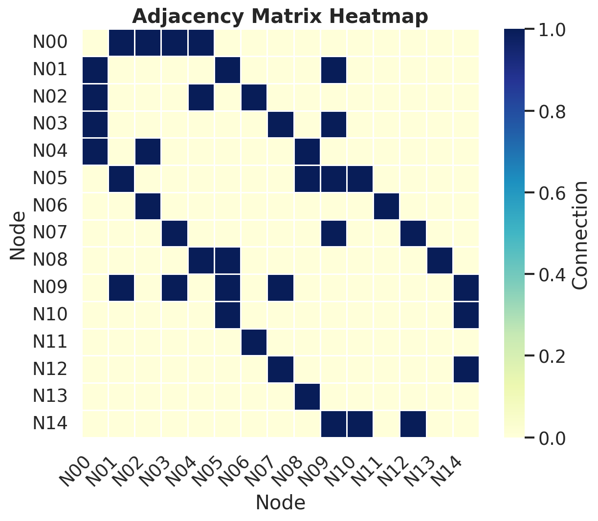
邻接矩阵的热力图展示节点间的连接关系，对角线为自身，非零元素表示相邻。
02
时空速度热力图展示速度随时间和空间的联合变化，时滞互相关揭示交通波传播方向。
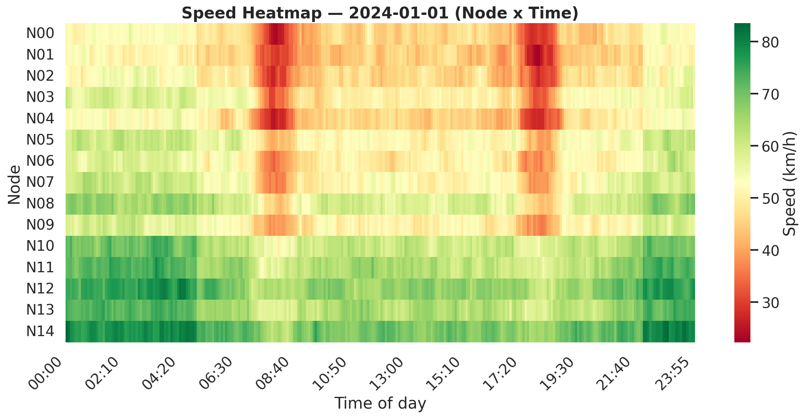
节点 × 时间的速度矩阵，颜色深浅表示速度高低，可观察早晚高峰的时空传播。
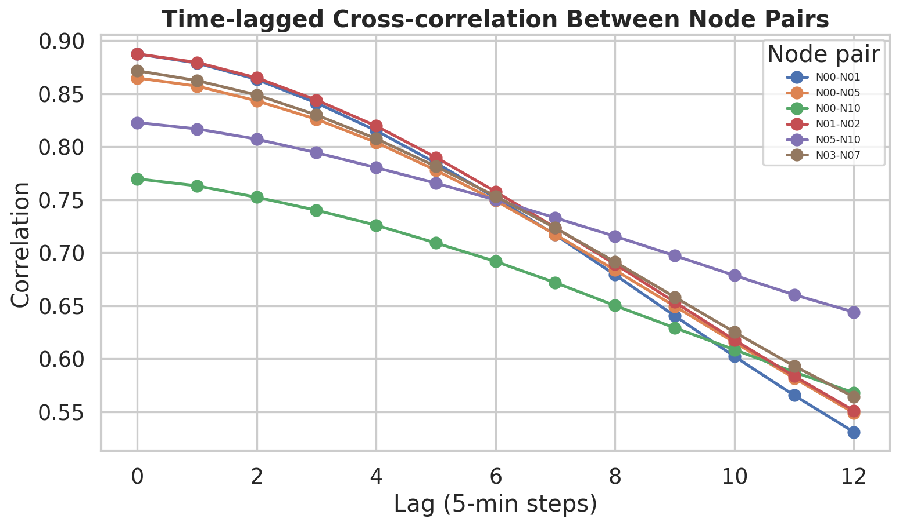
节点对之间的时滞相关性，最大相关对应的时滞表示交通波传播时间。
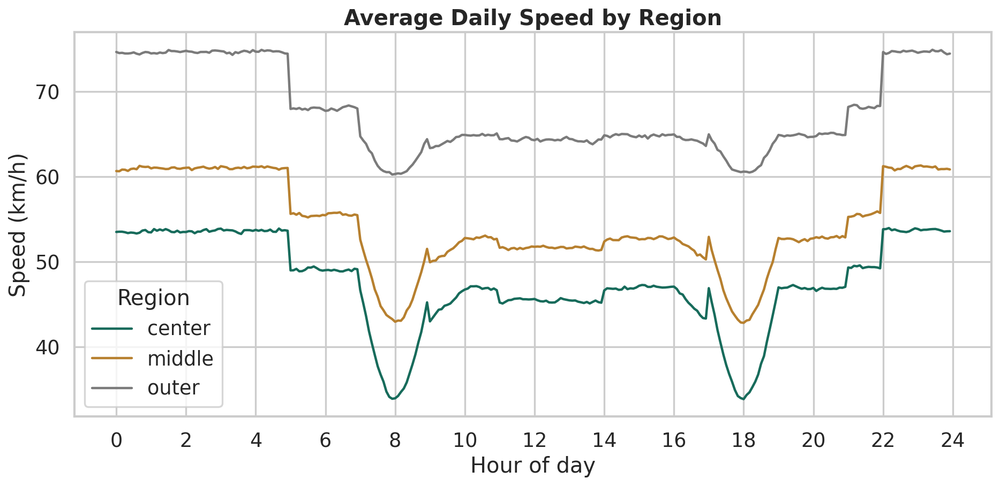
中心区域速度最低、波动最大，外围区域速度最高、波动最小。
互相关峰值对应的时滞步数表示信号传播延迟。例如 N01→N02 在 0 步时相关最高，说明两节点速度几乎同步变化；N03→N07 在 1-2 步时相关较高，说明从中心到中间区域有 5-10 分钟的传播延迟。
不同区域的速度水平和波动模式差异显著，这为后续聚类和分区建模提供了依据。中心区域受拥堵影响大，适合用更复杂的模型。
| 节点对 | 时滞（步） | 时滞（分钟） | 相关系数 |
|---|---|---|---|
| N01 → N02 | 0 | 0 | 0.888 |
| N00 → N01 | 0 | 0 | 0.887 |
| N01 → N02 | 1 | 5 | 0.879 |
| N00 → N01 | 1 | 5 | 0.879 |
| N03 → N07 | 0 | 0 | 0.872 |
| N01 → N02 | 2 | 10 | 0.865 |
| N00 → N05 | 0 | 0 | 0.865 |
| N00 → N01 | 2 | 10 | 0.863 |
| N03 → N07 | 1 | 5 | 0.862 |
| N00 → N05 | 1 | 5 | 0.857 |
03
DTW 距离衡量不同路段速度曲线的形态相似性，层次聚类将运行模式相近的路段归为一组。
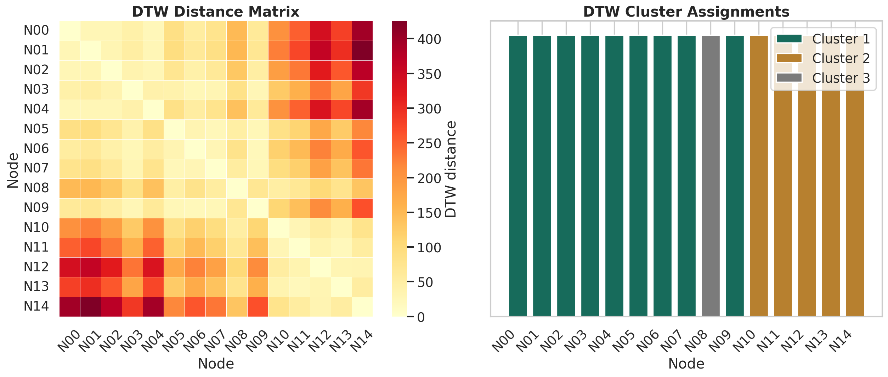
DTW 距离矩阵 + 层次聚类树状图，将 15 个节点聚为 3 类运行模式。
| 节点 | 聚类 | 区域 |
|---|---|---|
| N00 | 1 | center |
| N01 | 1 | center |
| N02 | 1 | center |
| N03 | 1 | center |
| N04 | 1 | center |
| N05 | 1 | middle |
| N06 | 1 | middle |
| N07 | 1 | middle |
| N08 | 3 | middle |
| N09 | 1 | middle |
| N10 | 2 | outer |
| N11 | 2 | outer |
| N12 | 2 | outer |
| N13 | 2 | outer |
| N14 | 2 | outer |
04
比较历史均值、VAR 和 XGBoost 三种模型的速度预测效果，VAR 和 XGBoost 显著优于历史均值基线。
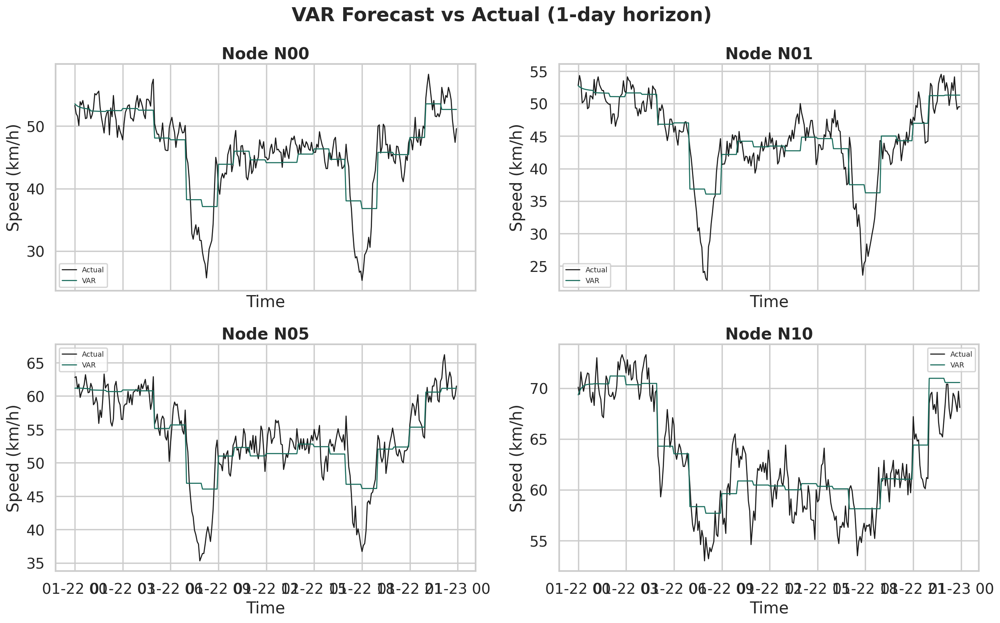
向量自回归模型捕捉多变量间的动态关系，适合短期预测。
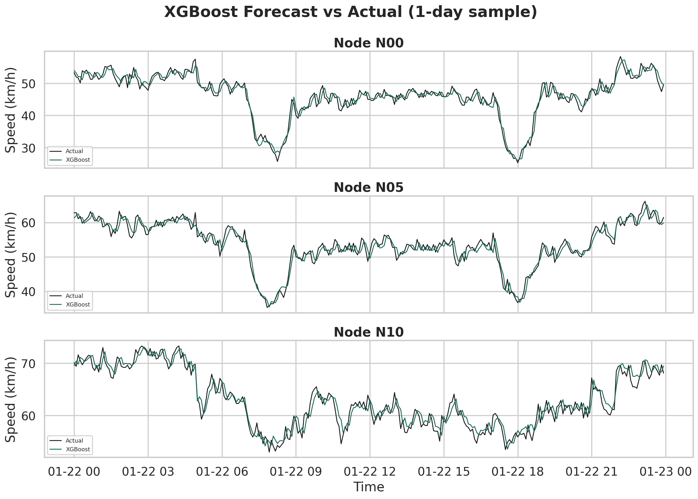
梯度提升树利用滞后特征、邻域信息和时间特征进行预测。
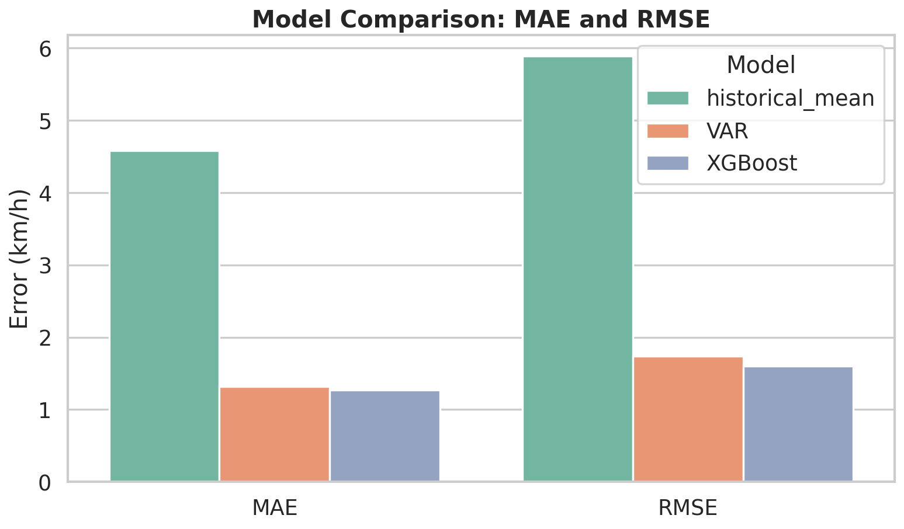
XGBoost 的 MAE 和 RMSE 均最低，VAR 次之，历史均值误差最大。
| 模型 | MAE | RMSE | 说明 |
|---|---|---|---|
| 历史均值 | 4.58 | 5.89 | 基线模型，仅用历史同时段均值 |
| VAR | 1.32 | 1.74 | 捕捉多变量动态，适合短期预测 |
| XGBoost | 1.27 | 1.60 | 利用多源特征，精度最高 |
05
从空间分布、预测步长和区域分组三个维度分析模型误差，帮助理解模型局限和改进方向。
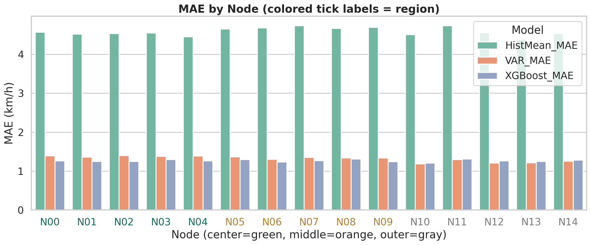
各节点的 MAE 空间分布，中心区域误差通常较高。
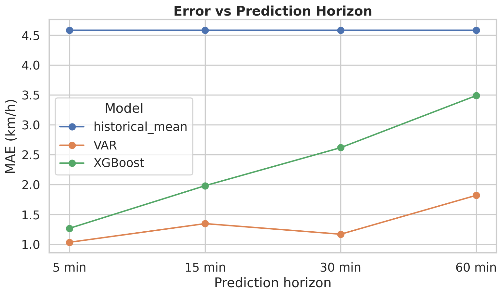
预测步长从 5 分钟到 60 分钟，误差随步长增加而上升。
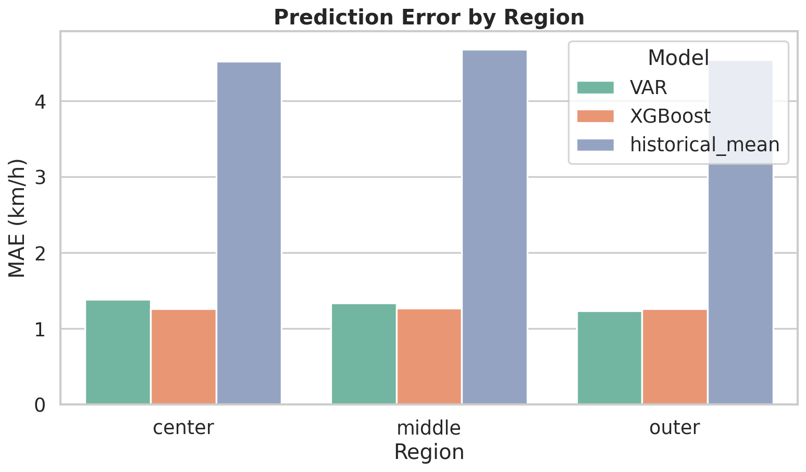
中心、中间、外围三区域的误差对比，中心区域误差最高。
06